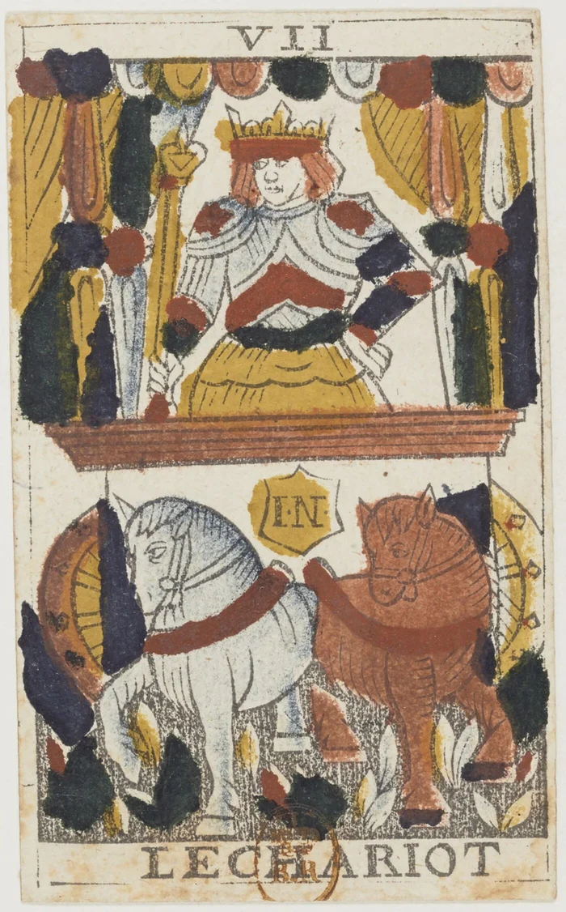

Historia del tarot
El Tarot de Marsella: madera tallada, color al esténcil y un nombre que llegó después
Un carro, dos caballos y, entre ellos, un escudo con dos letras: I·N. Antes de llamarse «de Marsella», estas imágenes salieron de talleres de París, Lyon y Marsella, talladas en madera y coloreadas con plantillas. Esta es la historia de cómo una familia de cartas encontró su nombre.

Hay imágenes que parecen haber existido siempre. El Mago frente a su mesa, la Estrella vertiendo agua, el Carro avanzando de frente con sus dos caballos: cuando alguien piensa en el tarot, muchas veces piensa en estas figuras de trazo negro y colores planos, rojo, amarillo, azul, carne. Pero antes de ser un emblema, fueron un oficio. Una tabla de madera tallada, una hoja de papel, un pincel que pasa por los huecos de una plantilla.
En este blog ya seguimos las cartas desde los juegos de la nobleza italiana hasta el sueño egipcio del siglo XVIII, y vimos cómo Italo Calvino empezó a escribir con el mazo de Marsella. Hoy nos acercamos a ese mazo por su lado material: los talleres, las firmas escondidas en las cartas y el nombre que, curiosamente, llegó mucho después que las imágenes.
Un nombre que llegó después
La expresión «tarot de Marsella» es más joven de lo que suena. La investigadora Laurence Danguy, de la Universidad de Lausana, explica que aparece hasta 1856: la usó Romain Merlin, especialista en naipes, como relator del jurado de la clase dedicada a la caligrafía, el grabado y las cartas de juego en la Exposición Universal de 1855. Después la retomaron los ocultistas, entre ellos Papus.
La Biblioteca Nacional de Francia (BnF) lo dice con delicadeza: es el tipo gráfico «que se llama por convención "tarot de Marsella"», porque Marsella parece haberse hecho una especialidad de él en la segunda mitad del siglo XVIII (traducción propia). Es decir, el nombre no señala un lugar de nacimiento, sino una familia de imágenes muy parecidas entre sí, que se tallaron en varias ciudades francesas.
Un carro firmado en París
El ejemplar más antiguo que conserva la BnF de ese tipo gráfico no es de Marsella, sino de París. Lo hizo Jean Noblet, un naipero documentado entre 1659 y 1681 que tenía su taller «au faubourg St Germain». La BnF lo fecha hacia 1659 y anota que lo produjo en una época en la que el juego del tarot declinaba en la capital.
De sus 78 cartas sobreviven 73. Son pequeñas, de unos nueve centímetros de alto, grabadas en madera y coloreadas al esténcil, con el reverso cubierto de hexágonos y cruces de Malta. Noblet firmó su obra como quien deja una huella en una pintura: su nombre y su dirección aparecen en el dos de Copas, otra dirección en el dos de Oros, «Iean Noblet Dm.t Av Favbovr St Germain», y sus iniciales, I·N, en el escudo del Carro que abre esta página. Las cartas provienen probablemente de la colección del anticuario François-Roger de Gaignières. La BnF señala también que el formato es más pequeño y la paleta de colores más amplia que en los mazos posteriores.
Un mazo que reapareció en 2023
La historia de estas cartas todavía se está escribiendo. En enero de 2023, el historiador Thierry Depaulis publicó en la revista Le Vieux Papier un artículo titulado «Un tarot de Marseille de 1639 !». Hablaba de un mazo hecho en Marsella por Philippe Vachier: 78 cartas de 78, grabadas en madera y coloreadas al esténcil. El 31 de marzo de ese año se subastó en el Hôtel Drouot de París y alcanzó 65 000 euros.
La fecha, 1639, está tallada en el dos de Oros con los números invertidos y un corte muy tosco, y por eso no todos los especialistas la aceptan como auténtica. Pero el mazo ya cambió la conversación: un tarot de este tipo, hecho en la propia Marsella, alrededor de un siglo antes de que la ciudad se volviera su gran productora. Como si las cartas respondieran, con algo de humor, a la pregunta por su nombre.
Hecho para viajar
A principios del siglo XVIII, en Lyon, Jean Dodal grabó otro mazo de 78 cartas que hoy conserva la BnF. En el dos de Oros se lee «FAICT A LYON PAR IEAN DODAL», hecho en Lyon por Jean Dodal. Y en varias figuras, como la Fuerza y el Mundo, aparece una inscripción curiosa: «F.P. LE TRANGE», es decir, fait pour l'étranger, hecho para el extranjero.
Thierry Depaulis, en el catálogo de la exposición Tarot, jeu et magie de la Biblioteca Nacional en 1984, propuso que Dodal exportaba probablemente a Italia: los naiperos del Piamonte y de Lombardía parecen haber dejado poco a poco de producir tarots de 78 cartas a finales del siglo XVII, o no alcanzaban a cubrir la demanda. Si fue así, hay algo hermoso en ese recorrido: las imágenes que habían nacido en Italia volvían a Italia talladas en Francia, con títulos en francés. El Diablo de Dodal todavía lleva una especie de rostro en el vientre, y el Loco ya se llama «Le Fol».
Madera de peral, plantillas que cambian
En Marsella, el nombre que más se repite es el de Nicolas Conver. El Museo de Vendôme guarda un mazo suyo reimpreso hacia 1795 y su ficha cuenta un detalle precioso: los moldes eran de madera de peral, estaban fechados en 1760 y no se reemplazaron durante más de un siglo. Lo que sí cambió fueron los colores. Las plantillas se renovaron varias veces, y el color al esténcil se mantuvo hasta 1880. Desde entonces, la casa Camoin, sucesora de Conver, simplificó la paleta a cuatro tintas, azul, rojo, amarillo y rosa, y obtuvo el verde superponiendo azul y amarillo.
La línea permanecía; el color respiraba distinto en cada edición. El Metropolitan Museum de Nueva York conserva también cartas grabadas a principios del siglo XIX «según Nicolas Conver», como La Papisa (La Papesse), de unos doce centímetros de alto. Cada copia es la misma imagen y, a la vez, otra.
Palabras que cambian de piel
También los nombres de las cartas se movieron. Laurence Danguy recuerda que el Ermitaño se llamó, según la época y el lugar, il Gobbo, Tempo, il Vecchio, Vielart, l'Hermite, Le Sage, le Chercheur de vérité o le Capucin. Y las palabras con que hoy hablamos de ellas, «láminas» (del latín lamina, placa) y «arcanos» (de arcanum, secreto), se volvieron habituales después de 1863, cuando Paul Christian publicó L'homme rouge des Tuileries. Antes se decía, simplemente, triunfos y cartas.
Según Danguy, hacia 1890 el tarot de Marsella se había vuelto casi imposible de encontrar en Francia, al punto de que algunos manuales daban instrucciones para fabricarlo una misma. En 1930, Paul Marteau, director de la casa Grimaud, lo presentó como «l'ancien tarot de Marseille», el antiguo tarot de Marsella. Para dibujarlo tomó como modelo un tarot de Besanzón, retomó los colores de un Conver y devolvió a la Papisa y al Papa el lugar que en aquel modelo ocupaban Juno y Júpiter. Según Danguy, ese mazo es hoy la referencia en Francia. En 1997, Alejandro Jodorowsky y Philippe Camoin publicaron otro, reconstruido por computadora a partir de una decena de modelos antiguos. Cada época vuelve a dibujar el tarot que necesita.
Una baraja surrealista en la Villa Air-Bel
Entre 1940 y 1941, Marsella fue la antesala del exilio para muchas personas que huían del nazismo. En la Villa Air-Bel, una casona alquilada por el periodista estadounidense Varian Fry, vivieron entonces André Breton, Jacqueline Lamba, Victor Brauner, Max Ernst y André Masson, entre otros. Según cuentan las Bibliotecas de Marsella, Breton consultó libros sobre naipes en una biblioteca de la ciudad, y el tarot de Marsella fue la referencia que entusiasmó a todo el grupo.
De ahí nació el Jeu de Marseille. No era un tarot, sino una baraja reinventada: sus palos se volvieron la llama del Amor, la estrella negra del Sueño, la rueda ensangrentada de la Revolución y la cerradura del Conocimiento; los reyes se volvieron genios, las reinas sirenas y las sotas magos. Wifredo Lam dibujó a Alice, y en el reverso escribió «Alice, sirène d'étoile ou de rêve», sirena de estrella o de sueño. Jacqueline Lamba dibujó a Baudelaire. Las cartas se publicaron en 1943 en la revista VVV, en Nueva York, y en 2003 Aube Breton-Elléouët, hija de Breton y Lamba, y Oona Elléouët donaron los dibujos originales al Museo Cantini de Marsella, en memoria de Varian Fry. Laurence Danguy cuenta este juego, junto al Jardín del Tarot de Niki de Saint Phalle, entre las maneras en que las vanguardias del siglo XX hicieron suyo el tarot.
Lo que permanece abierto
Los documentos dicen quién talló cada plancha, en qué calle estaba el taller, qué año se grabó en un dos de Oros. Dicen también que el nombre «de Marsella» llegó tarde y que cada edición cambió un color, una palabra, una figura. No agotan lo que pasa cuando alguien mira el Carro y siente que algo, adentro, también se pone en marcha. Las imágenes viajaron de Milán a París, de Lyon a Italia, de Marsella a Nueva York, y en cada viaje alguien las volvió a mirar por primera vez.
Te proponemos un ejercicio a la manera de los viejos talleres. Elige una carta de estilo Marsella, la que tengas o el Carro de esta página. Mírala primero solo por sus líneas, como si fuera una plancha sin color. Después imagina que cambias sus colores, como cambiaban las plantillas: ¿qué se mueve en lo que te dice? Por último, dale un nombre propio, como el Ermitaño tuvo tantos. Ese nombre ya es tu lectura.
Fuentes
- Bibliothèque nationale de France. «Tarot de Jean Noblet». BnF Essentiels. essentiels.bnf.fr
- Bibliothèque nationale de France. Ficha de catálogo: [Jeu de tarot à enseignes italiennes dit «tarot Noblet»], hacia 1659 (fecha según Thierry Depaulis). catalogue.bnf.fr
- Gallica (BnF). Digitalización del tarot de Jean Noblet. gallica.bnf.fr
- Depaulis, Thierry. «Un tarot de Marseille de 1639 !». Le Vieux Papier, boletín de enero de 2023, p. 194 (sumario). levieuxpapier-asso.org
- Doridou-Heim, Anne. «Un rare tarot marseillais de 1639». La Gazette Drouot, 6 de abril de 2023. gazette-drouot.com
- Smith, Sherryl E. «Celebrating the Tarot de Marseille Type I». Tarot Heritage, 28 de octubre de 2023. tarot-heritage.com
- Depaulis, Thierry. Ficha n.º 39 (tarot de Jean Dodal), en Tarot, jeu et magie, catálogo de exposición, París, Bibliothèque nationale, 1984, p. 72. Texto reproducido en letarot.com. letarot.com
- Gallica (BnF). [Jeu de tarot de Marseille destiné à l'exportation], tarot de Jean Dodal. gallica.bnf.fr
- Musée de Vendôme. «Tarot de Marseille» (Nicolas Conver, reimpresión hacia 1795), base Joconde, Ministerio de Cultura de Francia. pop.culture.gouv.fr
- The Metropolitan Museum of Art. La Papesse, de «Tarot de Marseille», según Nicolas Conver, principios del siglo XIX. metmuseum.org
- Danguy, Laurence. «Le tarot de Marseille – Regard sur les images d'un éphémère magique», en Les éphémères imprimés et l'image, Dijon, Éditions Universitaires de Dijon, 2023, pp. 189-202. unil.ch (PDF)
- Bibliothèques de Marseille. «Le jeu de Marseille». bmvr.marseille.fr
- Atelier André Breton. Jacqueline Lamba, Le jeu de Marseille. Projet de carte: Baudelaire, 1941, Musée Cantini. andrebreton.fr
- Musée Cantini. Wifredo Lam, Alice. Sirène de Rêve - Etoile; projet de carte pour le Jeu de Marseille, 1941, base Joconde. pop.culture.gouv.fr
- Imagen: Jean Noblet, Le Chariot, tarot de Jean Noblet, París, hacia 1659, Bibliothèque nationale de France, dominio público. Wikimedia Commons
Las citas de la BnF y la inscripción de Wifredo Lam provienen de los originales en francés; las traducciones al español son nuestras.